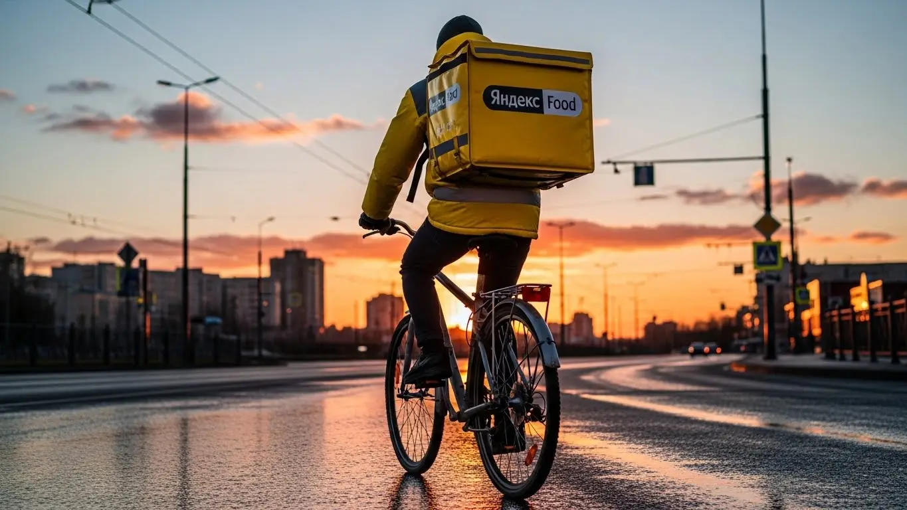

Работа курьером Яндекс Еды в Новом Уренгое 2025-2026: доход и условия
- Работа курьером Яндекс Еды в Новом Уренгое: для кого эта вакансия и что вы получите
- Сколько вы будете зарабатывать курьером в Новом Уренгое: калькулятор дохода и разбор выплат
- Реальный заработок курьера в Новом Уренгое: смены и месячный доход
- График работы и форматы занятости
- Требования к кандидату и документы
- Самозанятость, налоги и юридическая чистота
- Пошаговое оформление и первый выход на линию в Новом Уренгое
- Пешком, на вело или на авто: что выгоднее в Новом Уренгое
- Районы, маршруты и «топовые» зоны заказов в Новом Уренгое
- Безопасность, страховка, штрафы и оплата простоя
- Плюсы и возможные минусы работы курьером в Новом Уренгое
- Реальные истории и отзывы курьеров из Нового Уренгоя
- FAQ: Ответы на главные вопросы о работе курьером Яндекс Еды в Новом Уренгое
- Короткие ответы на главные вопросы
- Заключение: стоит ли начинать в Новом Уренгое
Все города
Думаешь, работа курьером Яндекс Еды в Новом Уренгое — это просто сел на машину и поехал рубить лёгкие деньги? Как бы не так. Сразу забудь рекламные сказки. Я расскажу, как не убить свою «ласточку» по нашим дорогам в вечную зиму, не простоять полсмены в пробках на Магистральной и не остаться с пустым карманом из-за штрафов и хитрых коэффициентов. Это не Москва, здесь свои правила игры, и если их не знать, доставка превратится в выживание.
Поверь, разница между тем, кто зарабатывает 3–4 тысячи за смену, и тем, кто едва отбивает бензин, — в знании мелочей. Это не только про налоги для самозанятых, но и про понимание, где в Южной части города всегда есть спрос, а куда в Северку лучше не соваться в час пик. Чтобы сразу вникнуть в детали, можешь посмотреть актуальные условия и воспользоваться калькулятором дохода — вся информация про работу курьером Яндекс Еда в Новом Уренгое собрана на официальной странице для партнёров. Новички в нашем городе как под копирку наступают на одни и те же грабли: берут неудобные заказы, теряют приоритет и в итоге разочаровываются, не проработав и месяца.
В этом гиде я разложу всё по полочкам. Мы честно посчитаем, сколько реально можно заработать в Новом Уренгое на своей машине, велосипеде или пешком, вычитая все расходы. Я покажу, в каких районах и в какое время самые «жирные» заказы, а где — глухо. Разберём, как наша погода — от метели до короткого лета — влияет на доход. Расскажу, за что на самом деле штрафуют и как этого избежать. И главное — сравним, стоит ли вообще идти в Яндекс Еду или у конкурентов в нашем городе условия лучше.
В общем, хватит теории. Меня зовут Алексей, я сам откатал не одну тысячу заказов по Новому Уренгою, а сейчас у меня свой небольшой таксопарк-партнёр. Я знаю эту кухню с обеих сторон — и как курьер, и как тот, кто помогает ребятам выходить на линию. Так что пристёгивайся, сейчас я без рекламной шелухи расскажу, что на самом деле представляет собой работа курьером Яндекс Еды в нашем газовом сердце страны. Давай по порядку.
Прежде чем нырять в детали, давай быстро пробежимся по ключевым моментам. Это поможет сориентироваться в статье.
Что ты точно узнаешь из этого разбора
В этой статье ты ТОЧНО узнаешь:
- Сколько реально можно заработать на машине за смену в мороз и метель, а сколько — пешком летом?
- В каких районах Нового Уренгоя — Южке или Северке — самые выгодные заказы и как не кататься впустую?
- Почему в Новом Уренгое работа на авто — это основной способ заработка, а не просто один из вариантов?
- За что на самом деле снижают рейтинг и как работает «оплата простоя», если заказов нет?
- Как правильно оформить самозанятость за 10 минут и сколько налогов придётся платить с дохода?
- Какие слоты в «Яндекс Про» выбирать, чтобы получать больше заказов и не терять время?
А если тебе некогда читать всю статью — переходи сразу к заключению, где ты найдёшь короткие ответы на все эти вопросы и указания, в каких разделах искать подробности.
А чтобы было нагляднее, вот основные цифры и факты о работе в Новом Уренгое в одной картинке.
Работа курьером в Новом Уренгое в цифрах
Доход в час
450-650 ₽
В часы пик и при высоком спросе
Заработок за смену
3500-5000 ₽
Средний доход за 8-10 часов работы
Чаевые от клиентов
+15-20%
Дополнительно к основному доходу
Свободный график
от 2 часов
Выбирайте удобные слоты в приложении
Работа курьером Яндекс Еды в Новом Уренгое: для кого эта вакансия и что вы получите
Кому подойдёт эта работа в Новом Уренгое
Давай начистоту: эта вакансия не для всех, но для многих — настоящая находка. В Новом Уренгое с его спецификой и ритмом жизни доставка в Яндекс Еде — это стабильный и понятный вариант заработка. В первую очередь, это идеальная подработка для студентов. Лекции закончились — вышел на пару часов, заработал на свои нужды, и никому ничего не должен. У тебя будет полностью свободный график, который ты сам планируешь в приложении Яндекс Про.
Также это отличный старт для тех, кто ищет работу без опыта. Здесь не спросят диплом и не потребуют резюме на три страницы. Нужен только смартфон, желание двигаться и минимальная ответственность. Многие ребята приходят сюда, чтобы заработать первые деньги или перекантоваться между основными работами. И, конечно, это отличный вариант для водителей. Если у тебя есть своё авто, ты можешь работать как курьер на автомобиле и рассчитывать на полноценный стабильный доход, особенно в наши северные зимы.

Главные преимущества для жителей районов Южный, Восточный, Советский
Главный плюс, который многие недооценивают, — возможность работать буквально у себя под окнами. Тебе не нужно тратить час-полтора, чтобы добраться до «офиса». Живёшь, например, в микрорайоне Южный — открываешь приложение Яндекс Про, выбираешь свою зону и начинаешь выполнять заказы Яндекс Еды или Яндекс Доставки, которые находятся рядом. То же самое касается жителей Восточного или Советского микрорайонов.
Система в Яндекс Про устроена так, что ты сам выбираешь локацию для старта смены. Это значит, что не придётся мотаться через весь город по пробкам за первым заказом. Можно работать в привычных кварталах, где знаешь каждый двор и подъезд. Это экономит не только время и деньги на дорогу, но и нервы, что в нашей работе немаловажно.
Краткое обещание по доходу и условиям
Теперь о главном — о деньгах. Потенциальный доход курьера в Новом Уренгое вполне достойный. Если рассматривать эту работу как подработку по 4–5 часов в день, то пеший курьер может спокойно зарабатывать 2000–2500 рублей за смену. Водитель-курьер на своем авто при полной занятости (8–10 часов) в хороший день, особенно в непогоду с повышенными коэффициентами, может получать и 5000–7000 рублей. В месяц у самых активных курьеров на автомобиле заработок доходит до 120 000 рублей.
Ключевые условия работы простые и понятные. Во-первых, это ежедневные выплаты: деньги приходят на карту каждый день, не нужно ждать зарплаты неделями. Во-вторых, у тебя абсолютно свободный график. В-третьих, для старта не нужен опыт. Важный момент: чтобы получать выплаты, нужно оформить самозанятость, это делается онлайн за 15 минут. А всё обучение проходит в приложении и занимает пару часов. Ты просто заполняешь анкету, проходишь инструктаж и можешь выходить на линию.
Сколько вы будете зарабатывать курьером в Новом Уренгое: калькулятор дохода и разбор выплат
Из чего складывается доход курьера
Твой заработок — это не просто фиксированная ставка, а сумма нескольких составляющих. Важно понимать, как это работает, чтобы влиять на свой итоговый доход. Во-первых, есть базовая оплата за каждый выполненный заказ. Во-вторых, к ней добавляется плата за расстояние — чем дальше везти, тем больше денег. В-третьих, самая интересная часть, особенно для Нового Уренгоя, — это повышающие коэффициенты. В плохую погоду (сильный мороз, метель) или в часы пик (вечер пятницы, выходные) стоимость заказов может умножаться в 1.5, 2, а то и в 3 раза.
Кроме этого, есть бонусы за достижение персональных целей (например, за выполнение определённого числа заказов в неделю). Все чаевые от клиентов, которые они оставляют через приложение, полностью твои, сервис не берёт с них комиссию. И два важных момента, которые защищают твой доход: оплата простоя, если ты приехал в ресторан, а заказ ещё не готов, и возможная компенсация проезда на общественном транспорте для пеших курьеров на длинных маршрутах.
Как пользоваться калькулятором дохода
Чтобы прикинуть свой потенциальный заработок, можно использовать специальный калькулятор на странице с анкетой. Пользоваться им элементарно. Сначала выбираешь свой город — Новый Уренгой. Затем указываешь, как планируешь доставлять: как пеший курьер, велокурьер (актуально для короткого лета) или как курьер на автомобиле.
Далее двигаешь ползунки: выставляешь, сколько часов в день и сколько дней в неделю ты готов работать. На основе этих данных система покажет тебе примерный диапазон твоего дневного и месячного заработка. Важно понимать, что это прогноз, основанный на средних показателях. Твой реальный доход будет зависеть от спроса, погоды и твоего умения выбирать выгодные заказы, но для общего ориентира калькулятор подходит идеально.
Калькулятор дохода курьера в Новом Уренгое
Примерный доход в месяц
88 000 ₽
~ 4 400 ₽ в день
Это примерный расчёт на основе средней ставки в Новом Уренгое. Реальный доход зависит от спроса, погоды, вашего рейтинга и бонусов.
Чтобы увидеть более точные цифры и сразу подать заявку, загляни на страницу работа курьером Яндекс Еда в твоём городе — там есть актуальные условия, калькулятор и форма для анкеты.
Примеры расчёта для пешего, вело- и авто‑курьера в Новом Уренгое
Давай на конкретных примерах. Пеший курьер, работающий в центре Нового Уренгоя, в районе Ленинградского проспекта, где много кафе, за 4-часовую вечернюю смену в будний день может заработать около 2000 рублей. Заказы там частые, но расстояния небольшие.
Велокурьер — это сезонная история для нашего города. Летом, работая по 6–8 часов в выходной день и доставляя заказы Яндекс Еды между микрорайонами Южный и Советский, можно рассчитывать на 3000–4000 рублей. Скорость выше, чем у пешего, поэтому и заказов успеваешь сделать больше.
Самый стабильный и высокий доход в Новом Уренгое у водителя-курьера на своем авто. Представь: суббота, на улице метель и -30°C. Спрос на доставку взлетает до небес, а Яндекс Про по всему городу показывает «фиолетовые» зоны с максимальными коэффициентами. За полную 10-часовую смену в такой день можно заработать 7000–8000 рублей и даже больше. Ты берёшь дальние заказы, которые невыгодны другим, и получаешь хорошие чаевые от благодарных клиентов, которым не пришлось выходить из дома в такой мороз.
Реальный заработок курьера в Новом Уренгое: смены и месячный доход
Давай к главному — к деньгам. Сколько реально можно заработать, работая курьером в Яндекс Доставке в Новом Уренгое? Забудь про рекламные обещания о миллионах, я расскажу, как обстоят дела на самом деле. Твой доход — это не фиксированная зарплата, а результат твоей работы, умноженный на смекалку и знание города. Цифры сильно зависят от того, на чём ты доставляешь, сколько часов работаешь и готов ли выходить на линию, когда другие сидят дома.
Диапазон дохода для подработки и полной занятости
Сразу скажу: в суровых условиях Нового Уренгоя пеший курьер или велокурьер — это скорее экзотика для короткого лета. Основные деньги здесь делаются на машине, особенно в наши длинные зимы. Поэтому ориентироваться будем в первую очередь на водителей-курьеров.
Если ты ищешь подработку на 2–4 часа в день, например, после основной работы, то на своём авто можешь рассчитывать на 2000–3500 рублей за смену. В месяц такая занятость приносит 40 000–70 000 рублей «грязными», то есть до вычета расходов на бензин. Для пешего курьера в хороший летний день за такой же короткий слот выйдет 1000–1800 рублей.
При полной занятости, когда ты на линии по 8–10 часов 5-6 дней в неделю, цифры совсем другие. Водитель-курьер в Новом Уренгое стабильно делает 5000–8000 рублей в день. В удачные дни, особенно в непогоду с высокими коэффициентами, можно вывезти и 10 000 рублей. В итоге месячный доход автокурьера при полной занятости колеблется в диапазоне 110 000–170 000 рублей. Опять же, это оборот, из которого нужно вычесть топливо и амортизацию.
Как район, время суток и погода влияют на доход
Заработок курьера — это не константа. Он постоянно меняется, и на это влияют три главных фактора: где, когда и в какую погоду ты работаешь. Поняв эту механику, ты сможешь зарабатывать больше, работая столько же.
В Новом Уренгое самые «жирные» зоны — это густонаселённые микрорайоны Южной части («Южка»), такие как Советский, Мирный, Оптимистов. Здесь много заказов из кафе и магазинов. Северная часть («Северка») тоже активна, но расстояния могут быть больше. Пиковое время стандартное: обед с 12:00 до 14:00 и, конечно, вечерний час пик с 18:00 до 22:00. Пятница, суббота и воскресенье — это твои лучшие друзья, в эти дни заказов всегда больше.
Но главный козырь в Новом Уренгое — это погода. Как только начинается метель, сильный мороз или ледяной дождь, спрос на доставку взлетает до небес. Люди не хотят выходить из дома, и приложение «Яндекс Про» включает повышающие коэффициенты. В такие моменты стоимость каждого заказа может умножаться в 1.5, 2, а то и в 2.5 раза. Кроме того, в плохую погоду клиенты чаще оставляют щедрые чаевые — из уважения к твоему труду.
Советы по увеличению заработка от опытных курьеров
Чтобы не просто работать, а именно зарабатывать, нужно подходить к делу с головой. Вот несколько проверенных советов. Во-первых, всегда планируй свои смены (слоты) заранее через «Яндекс Про». Самые выгодные — вечерние и выходные — разбирают быстро. Во-вторых, следи за картой спроса в приложении. Не стой на месте в «синей» зоне, двигайся туда, где карта «горит» фиолетовым — там самые высокие коэффициенты.
Для Нового Уренгоя совет один: работай на машине. Это даёт тебе скорость, возможность брать дальние заказы и, самое главное, комфорт и безопасность в наши морозы. К тому же, в машине удобно возить термокороб, чтобы еда не остывала. Не гоняйся за одним заказом на другой конец города, если нет высокого коэффициента. Лучше выполнить 3-4 коротких заказа в пределах одного микрорайона, например, в Советском, чем один длинный и невыгодный.
Используй мультизаказы — когда сервис предлагает тебе забрать несколько посылок по пути. Это значительно увеличивает твой заработок в час. И, конечно, будь вежлив с клиентами. Хороший рейтинг и положительные отзывы не только приятны, но и влияют на твой приоритет при распределении заказов.
Вот реальный кейс. Мой знакомый водитель-курьер в прошлую зиму, когда ударили морозы под -40, специально выходил на линию в вечерние слоты. За 4 часа работы в пик спроса с коэффициентом х2 он зарабатывал 5000-6000 рублей. Да, расход на топливо выше из-за прогрева, но чистая прибыль за такие смены перекрывала все издержки.
В общем, условия работы курьером в Новом Уренгое таковы, что твой доход напрямую зависит от транспорта, умения планировать и готовности работать, когда это выгоднее всего. Основные деньги приносят автомобиль, плохая погода и вечерние часы. Мой главный совет: если решил стать курьером всерьёз, убедись, что твоя машина надёжна. В наших условиях это не роскошь, а рабочий инструмент.
График работы и форматы занятости
Одно из главных преимуществ работы курьером — это свободный график. Ты сам решаешь, когда и сколько работать. Это идеальный вариант и для тех, кому нужна небольшая подработка, и для тех, кто ищет полноценный источник дохода. Никаких начальников, стоящих над душой, и жёстких рамок с 9 до 6.
Подработка после учёбы или основной работы
Совмещать доставку с другими делами проще простого. Я знаю много ребят, которые отлично вписывают эту работу в свой основной график и получают хороший дополнительный доход. Многие находят такие вакансии, когда ищут именно подработку без опыта.
Вот, к примеру, студент местного филиала ТИУ. Он учится днём, а вечером с 18:00 до 22:00 выходит на линию на своей старенькой «Ладе». Катается по Южной части, развозит ужины. В будни делает по 2000-2500 рублей, а в субботу берёт смену на 6-8 часов и зарабатывает 4000-5000. В месяц у него выходит около 50 000 рублей — отличные деньги для студента, которые он тратит на свои нужды, не дёргая родителей.
Или другой случай — мужчина, который работает вахтой на месторождении. Когда он возвращается в город на межвахту, то чтобы не сидеть без дела, несколько недель работает автокурьером в плотном режиме. Это позволяет ему и в тонусе себя держать, и привезти в семью дополнительные 60 000–80 000 рублей. Он говорит, что это лучше, чем просто лежать на диване.
Полная занятость: как выглядит типичный день курьера
Если ты рассматриваешь доставку как основную работу, твой день будет более структурированным. Вот как выглядит типичный день опытного автокурьера в Новом Уренгое.
Курьер выходит на линию около 11:00, как раз к началу обеденного спроса. Сначала он проверяет карту в «Яндекс Про», видит, что спрос начинает расти в районе проспекта Губкина, и двигается туда. С 12:00 до 15:00 идёт самый поток заказов из ресторанов и кафе — в основном это Яндекс Еда. В это время он старается работать быстро, берёт мультизаказы, чтобы выполнить как можно больше доставок.
После 15:00 наступает небольшое затишье. В это время можно взять перерыв, пообедать, заправить машину. Или переключиться на доставку из магазинов и заказов Яндекс Маркета — такие тоже есть всегда. К 17:30 он снова в полной готовности, потому что начинается вечерний пик — самый прибыльный. До 21:30-22:00 он активно работает в спальных районах, развозя ужины. После этого поток заказов спадает, и можно заканчивать смену, посмотрев на итоговую сумму за день.
Как планировать слоты и выходы через приложение «Яндекс Про»
Чтобы твой доход был стабильным, нужно пользоваться главным инструментом — планированием слотов в приложении «Яндекс Про». Слот — это забронированный отрезок времени в определённом районе, в течение которого сервис гарантирует тебе приоритет в заказах.
В приложении нужно зайти в раздел «Расписание», выбрать удобный день и посмотреть доступные слоты: например, с 10:00 до 14:00 или с 18:00 до 22:00. Самые выгодные — вечерние и выходные — разбирают за несколько дней, так что планируй свою неделю заранее. Выбрав слот, ты должен быть в указанной зоне и нажать кнопку «Начать» вовремя.
Опаздывать на слот нельзя — это одно из ключевых требований. Опоздание снижает твой рейтинг Активности, а система может отменить слот и отдать его другому курьеру. Пунктуальность здесь — это не просто вежливость, а прямой путь к высокому приоритету. Чем выше твой приоритет, тем больше выгодных заказов ты получаешь. Поэтому относись к запланированным сменам серьёзно, даже если это всего 2 часа.
Был у меня в парке парень, который поначалу работал в свободном режиме — выходил, когда вздумается. Заработок скакал: то густо, то пусто. Я посоветовал ему попробовать работать по слотам. Он начал бронировать себе вечерние 4-часовые смены в своём районе. Уже через неделю он заметил, что доход стал не только выше, но и гораздо стабильнее. Просто потому, что он был в нужное время в нужном месте, и система видела его как надёжного исполнителя.
Итак, свободный график — это круто, но для стабильного дохода нужна дисциплина. Используй «Яндекс Про» для планирования, выбирай выгодные слоты и будь пунктуален. Мой совет: даже если это подработка, относись к ней как к настоящей работе, и тогда финансовый результат тебя не разочарует.
Требования к кандидату и документы
Возраст, гражданство и базовые условия
Многие думают, что для работы курьером нужен специальный опыт или стопка бумаг. На деле всё гораздо проще. Главное — соответствовать базовым условиям, которые у Яндекса едины по всей стране, в том числе и в Новом Уренгое. Никаких резюме и собеседований на три часа — здесь всё по-деловому, и начать можно без опыта.
Во-первых, возраст. Строго с 18 лет. Никаких исключений, потому что работа связана с материальной ответственностью. Во-вторых, гражданство. Подойдёт паспорт РФ или одной из стран ЕАЭС — это Беларусь, Казахстан, Армения и Киргизия. Если ты гражданин другой страны, уточни у партнёра, какие документы нужны для легальной работы, обычно это патент, вид на жительство и регистрация.
И последнее — общие требования. Нужен смартфон на Android, так как рабочее приложение «Яндекс Про» создано для этой системы. Что касается физической формы, то сверхъестественного не требуется. Для пешего курьера в Новом Уренгое важна выносливость, особенно зимой. А для курьера на своем авто главное — уверенно водить машину и ориентироваться в городе. Никто не ждёт от тебя олимпийских рекордов.
Какие документы нужны для работы курьером
Чтобы не терять время, подготовь пакет документов заранее. Список короткий и понятный, ничего сверхъестественного в нём нет. Это стандартный набор для любого, кто хочет работать официально и получать белую зарплату.
Вот что тебе понадобится:
- Паспорт. Основной документ, удостоверяющий личность. Для граждан РФ — внутренний, для граждан стран ЕАЭС — национальный, иногда с нотариально заверенным переводом.
- ИНН. Идентификационный номер налогоплательщика нужен для оформления в качестве самозанятого и уплаты налогов. Если номера нет или ты его не помнишь, его легко узнать на сайте ФНС.
- Банковская карта. Любая карта российского банка на твоё имя. На неё будут приходить выплаты за выполненные заказы. Подойдёт карта системы «Мир», Visa или Mastercard.
- Медицинская книжка. Для большинства заказов в Яндекс Еде она не требуется, так как ты доставляешь запечатанные пакеты из ресторанов. Но если планируешь работать с доставкой из продуктовых магазинов или дарксторов, медкнижка может понадобиться. Лучше уточнить этот момент при подключении, но на старте это не обязательное требование.
Можно ли работать с 16 лет и какие есть альтернативы
Часто спрашивают, со скольки лет можно подрабатывать курьером. Отвечаю честно: в Яндекс Еде — строго с 18 лет. Сервис сотрудничает только с совершеннолетними, так как работа курьером предполагает полную материальную ответственность за дорогие заказы и денежные средства.
Понимаю желание подростков заработать, но правила есть правила. Не стоит пытаться их обойти, используя чужие документы — это прямой путь к быстрой блокировке. Лучше рассмотреть другие варианты подработки, которые доступны в Новом Уренгое для твоего возраста. Например, можно устроиться промоутером, расклеивать объявления или помогать в местных кафе. А как исполнится 18 — добро пожаловать в доставку.
Самозанятость, налоги и юридическая чистота
Почему курьеры Яндекс Еды работают как самозанятые
Слово «самозанятость» некоторых пугает, а зря. На самом деле это самый простой и прозрачный способ работать на себя и получать официальный доход. Яндекс Еда — это не работодатель в классическом понимании, а платформа, которая даёт тебе заказы. Ты — независимый исполнитель, партнёр сервиса, который сам выбирает график работы. Именно для такого формата сотрудничества и был придуман налоговый режим НПД (налог на профессиональный доход), или, по-простому, самозанятость.
Главные плюсы такого формата — легальность и простота. Весь твой доход — белый. Ты можешь взять кредит или подтвердить заработок для визы. При этом не нужно вести сложную бухгалтерию и сдавать декларации. Всё происходит автоматически через приложение. Это гораздо безопаснее, чем работать за «серый» кеш и переживать, что тебя обманут с выплатой или возникнут проблемы с налоговой.
Как за 10 минут оформить самозанятость через «Мой налог»
Оформление статуса самозанятого занимает меньше времени, чем заварить кофе. Никаких поездок в налоговую и очередей. Всё делается онлайн через официальное приложение ФНС «Мой налог».
Вот простая пошаговая инструкция:
- Скачай приложение «Мой налог» в Google Play или App Store.
- Открой его и нажми «Стать самозанятым».
- Выбери способ регистрации «По паспорту РФ».
- Отсканируй основную страницу паспорта камерой телефона — приложение само распознает данные.
- Подтверди номер телефона и сделай селфи для идентификации.
- Выбери регион ведения деятельности — Ямало-Ненецкий автономный округ.
- Подтверди регистрацию. Готово! Весь процесс занимает от силы 10 минут.
После этого останется только привязать свой статус самозанятого в приложении «Яндекс Про», и система будет сама передавать данные о доходах в налоговую.
Сколько и как платить налоги
Теперь о самом главном — о деньгах. Налог для самозанятых курьеров рассчитывается по простой и выгодной системе. Ставка зависит от того, от кого ты получаешь доход. В случае с Яндекс Едой ты сотрудничаешь с юридическим лицом, поэтому твой налог — 6% от заработка. Если будешь оказывать услуги физлицам, то налог с этих доходов составит 4%.
Процесс уплаты полностью автоматизирован, считать вручную ничего не нужно. Приложение «Яндекс Про» само передаёт информацию о твоём заработке в ФНС. До 12-го числа каждого месяца в приложении «Мой налог» появляется квитанция с суммой за предыдущий месяц. Оплатить её нужно до 28-го числа прямо в приложении с банковской карты. Всё прозрачно и без лишней головной боли. Это честная работа с официальным доходом, что в наше время — большой плюс.
Пошаговое оформление и первый выход на линию в Новом Уренгое
Многие думают, что устроиться курьером — это долгое ожидание и куча бумаг. На деле всё гораздо проще, особенно здесь, в Новом Уренгое. Весь процесс построен так, чтобы ты мог выйти на линию и получить первые деньги в тот же день или на следующий. Никакой бюрократии, всё делается через смартфон, и опыт не требуется. Главное — твоё желание работать, а система поможет с остальным.
Давай по шагам разберём, как это происходит. От заполнения простой анкеты до первого выполненного заказа — здесь нет ничего сложного. Система максимально автоматизирована, чтобы убрать лишние барьеры и не тратить твоё время.
Шаг 1–2: анкета и онлайн‑обучение
Всё начинается с анкеты на сайте. Никаких резюме и собеседований. Ты просто указываешь имя, номер телефона и город — Новый Уренгой. После этого придёт ссылка на короткое онлайн-обучение. Это не нудные лекции, а несколько коротких видео или слайдов прямо в приложении. Тебе расскажут об основах работы в сервисах вроде Яндекс Еды: как пользоваться приложением «Яндекс Про», правильно общаться с клиентами и ресторанами, как обращаться с заказами.
В конце будет небольшой тест из нескольких вопросов. Не переживай, если не ответишь на всё с первого раза — его можно пересдать. Цель этого обучения — не завалить тебя, а убедиться, что ты понял базовые правила и условия работы. Весь процесс от анкеты до сдачи теста обычно занимает не больше 30–40 минут. Пока ты учишься, сервис быстро проверяет твои данные.
Шаг 3: получение сумки и доступа к заказам в Новом Уренгое
После успешного обучения и проверки документов тебе нужно получить главный рабочий инструмент — фирменную термосумку (или термокороб для автокурьеров). В Новом Уренгое нет огромных центров для курьеров, как в Москве, поэтому процесс организован иначе. Чаще всего экипировку выдают через партнёров сервиса, либо её могут даже доставить тебе на дом.
Точный адрес пункта выдачи или способ получения сумки ты увидишь прямо в приложении «Яндекс Про». Как только получишь термокороб и активируешь его в приложении, твой профиль станет полностью активным. С этого момента ты получаешь доступ к заказам и можешь выходить на линию. Это финальный шаг перед тем, как начать зарабатывать.
Шаг 4: первый слот и первый доход
Теперь самое интересное. Ты открываешь «Яндекс Про», видишь карту Нового Уренгоя с доступными зонами и выбираешь свой первый слот. Слот — это запланированный отрезок времени, когда ты будешь выполнять заказы. Для первого раза советую не брать сразу 8–10 часов. Выбери короткий слот на 3–4 часа в районе, который хорошо знаешь. Например, если живёшь в южной части, начни с микрорайонов Мирный или Дружба.
Как только твой слот начнётся, ты выходишь на линию, и приложение начнёт предлагать заказы. Принимаешь первый, идёшь в ресторан, забираешь пакет, относишь клиенту. Всё, первый заработок у тебя на балансе. Деньги за выполненные заказы видны в приложении сразу, а благодаря системе ежедневных выплат их можно быстро перевести на карту. Это очень мотивирует, когда видишь результат своей работы буквально через час после старта.
Из практики: парень у нас в парке решил попробовать. Утром в субботу заполнил анкету, прошёл обучение. Днём с ним связался партнёр, и он забрал сумку. Вечером выбрал слот на 4 часа в своём районе, в северной части города. Немного волновался, но быстро втянулся. За вечер выполнил 7 заказов и заработал около 1800 рублей, включая чаевые. Говорит, сам не ожидал, что всё окажется так просто.
В итоге, весь процесс от заявки до первого дохода занимает минимум времени. Основные шаги — это анкета, быстрое онлайн-обучение и получение сумки. Начать можно буквально в тот же день. Мой совет новичкам: не бойтесь первого дня. Выберите знакомый район и короткий слот, чтобы спокойно освоиться без спешки.
Пешком, на вело или на авто: что выгоднее в Новом Уренгое
Выбор транспорта — ключевой момент, который напрямую влияет на твой доход и комфорт, особенно в условиях нашего северного города. В Новом Уренгое у каждого формата — пешком, на велосипеде или на машине — есть своя специфика. То, что идеально для лета в центре, будет совершенно неэффективно зимой на окраине. Поэтому важно сразу понять, какой способ доставки подходит именно тебе.
Нужно честно оценить свои возможности, наличие транспорта и готовность работать в разных погодных условиях. Давай разберём плюсы и минусы каждого варианта применительно к реалиям Нового Уренгоя.
Пеший курьер: для центра и плотной застройки в Новом Уренгое
Пешая доставка — отличный вариант, если у тебя нет машины и ты ищешь подработку в центре. В Новом Уренгое самая высокая плотность заказов сосредоточена в районе Ленинградского проспекта, проспекта Губкина и прилегающих микрорайонов. Здесь много кафе, ресторанов и магазинов. Заказы часто бывают на короткие расстояния — из ТРЦ «Солнечный» или «Гудзон» в соседний дом или бизнес-центр.
Главный плюс — никаких расходов на топливо и обслуживание транспорта. Ты не зависишь от пробок на центральных улицах в часы пик. Зимой, когда дворы завалены снегом, пешком по расчищенным тротуарам бывает даже быстрее, чем на машине. Но есть и очевидный минус — суровый климат. Работать пешком в минус 30–40 градусов — это серьёзное испытание, нужна очень качественная и тёплая экипировка.
Велокурьер: быстрые доставки между спальными районами
Скажу честно: велосипед в Новом Уренгое — это строго сезонный вариант. Работать на нём можно от силы 3–4 месяца в году, когда нет снега и сильного ветра. Но в этот короткий летний период велокурьер может быть очень эффективен. Ты быстрее пешего курьера и мобильнее автомобилиста, особенно при доставках между соседними микрорайонами, например, в северной части города между Советским и Оптимистов или в южной — между Мирным и Дружбой.
Велосипед позволяет срезать путь через дворы и парки, избегая светофоров на Магистральной улице. Это своего рода «оплачиваемый фитнес»: ты и деньги зарабатываешь, и форму поддерживаешь. Но нужно помнить, что это работа на короткий сезон. Как только начинаются первые заморозки, этот вариант становится неактуальным и небезопасным.
Водитель‑курьер: заказы по всему городу и пригороду Лимбяяха, Коротчаево
Работа курьером на своем авто — самый выгодный и стабильный вариант в Новом Уренгое. Это факт. Только на машине ты можешь комфортно работать круглый год, невзирая на морозы, метели и ветер. Водитель-курьер берёт самые дорогие заказы: доставка тяжёлых покупок из супермаркетов, большие заказы из ресторанов на всю семью и, что самое главное, дальние доставки.
Именно курьеры на автомобиле обслуживают заказы между северной и южной частями города, а также ездят в отдалённые районы, такие как Лимбяяха и Коротчаево. Такие поездки оплачиваются очень хорошо. В плохую погоду, когда спрос на доставку взлетает, а пешие курьеры сходят с линии, у водителей начинается самая работа с повышенными коэффициентами. Да, есть расходы на бензин и амортизацию, но они с лихвой перекрываются высоким доходом.
Сравнение форматов доставки в Новом Уренгое
| Параметр | Пеший курьер | Велокурьер (сезонно) | Водитель-курьер |
|---|---|---|---|
| Зоны работы | Центр, плотная застройка (р-н Ленинградского пр-та) | Соседние микрорайоны (Советский, Мирный, Дружба) | Весь город, включая отдалённые районы (Лимбяяха, Коротчаево) |
| Доход | Средний | Средний (только летом) | Высокий |
| Плюсы | Нет расходов на транспорт, независимость от пробок | Скорость, маневренность, "оплачиваемый фитнес" | Всепогодность, комфорт, самые дорогие заказы, высокий доход |
| Минусы | Сильная зависимость от погоды, физическая нагрузка | Строго сезонная работа (3-4 месяца в году) | Расходы на топливо и обслуживание авто |
Из практики: у меня работает водителем парень на старенькой «Ладе». В обычные дни он спокойно катается по городу, его зарплата составляет 4-5 тысяч за смену. Но как только начинается пурга, он говорит, что это его «золотое время». В один из таких дней в феврале он вышел на линию вечером. Коэффициенты были х2.5-х3. Он брал заказы один за другим, потому что почти никто больше не работал. За 6 часов сделал почти 10 000 рублей. Говорит, что в такие дни машина окупает себя за неделю вперёд.
В итоге, для Нового Уренгоя автомобиль — это самый надёжный и прибыльный вариант. Пешая доставка подходит для подработки в центре, если нет машины и есть готовность к суровой погоде. Велосипед — это скорее летнее хобби, которое может приносить доход. Мой совет: если у тебя есть машина, даже не думай — выбирай работу водителем-курьером. Это самый верный способ обеспечить себе стабильный и высокий заработок в наших климатических условиях.
Районы, маршруты и «топовые» зоны заказов в Новом Уренгое
Чтобы не кататься вхолостую, а стабильно зарабатывать, нужно понимать карту города с точки зрения курьера Яндекс Еды. Новый Уренгой — город компактный, но со своими особенностями. Главное правило: деньги там, где люди едят и покупают. Это либо крупные торговые центры в обед и вечером, либо густонаселённые жилые микрорайоны, откуда идёт доставка продуктов и готовой еды по вечерам и в выходные.
Твоя задача — научиться читать карту спроса в приложении «Яндекс Про» и предугадывать, где будет следующий всплеск заказов. Поначалу можно просто ехать в зоны, подсвеченные фиолетовым, — там уже действует повышенный коэффициент. Со временем ты начнёшь понимать логику: ага, обеденное время, значит, курьерам на велосипеде и авто надо двигаться к центру, где офисы и ТРЦ. Вечер пятницы — пора смещаться в сторону спальных районов, оттуда пойдут заказы из ресторанов и доставка из магазинов.
Где больше всего заказов: ТРЦ, бизнес-центры и туристические места
Самые выгодные места для работы курьером в Новом Уренгое — это, конечно, крупные торговые центры. В первую очередь смотри на ТРЦ «Солнечный» и ТРЦ «Гудзон». Вокруг них сосредоточено огромное количество кафе, ресторанов быстрого питания и магазинов. В обеденное время (с 12:00 до 15:00) и вечером (с 18:00 до 21:00) здесь всегда высокий спрос. Заказы на доставку идут как от работников ближайших офисов, так и от посетителей самих ТРЦ.
Кроме того, не стоит сбрасывать со счетов деловую часть Нового Уренгоя. Районы, где расположены офисы газовых компаний, — это стабильный поток заказов на доставку еды и обедов. Маршруты здесь обычно короткие, а клиенты — щедрые на чаевые. В выходные и праздничные дни хорошо работает центр города, особенно если погода позволяет людям гулять. Заказы на кофе, выпечку и пиццу летят один за другим.
Работа в своём районе: примеры для популярных жилых кварталов
Многие курьеры думают, что для хорошего заработка нужно обязательно ехать в центр. Это не так. В Новом Уренгое можно отлично работать, не уезжая далеко от дома, особенно если ты живёшь в крупных микрорайонах, таких как Юбилейный или Восточный. Здесь полно своих точек притяжения: локальные пиццерии, суши-бары, сетевые магазины вроде «Пятёрочки» и «Магнита», откуда тоже идёт поток заказов на доставку.
Преимущество работы в своём районе очевидно: ты знаешь каждую тропинку, каждый двор и подъезд. Это экономит время и нервы, что напрямую влияет на итоговый доход. Вечером, когда люди возвращаются с работы и не хотят готовить, или в плохую погоду спрос на доставку в спальных районах резко возрастает. Можно взять короткий слот на 3–4 часа и выполнить 8–10 заказов, практически не выезжая за пределы своего квартала. Это идеальный вариант для подработки или для тех, кто предпочитает работать пешим курьером.
Как выбирать зоны и слоты в «Яндекс Про», чтобы не мотаться впустую
Приложение «Яндекс Про» — твой главный инструмент. Ключевой элемент в нём — карта с «горячими» зонами. Они подсвечиваются разными оттенками фиолетового: чем ярче цвет, тем выше спрос и, соответственно, повышающий коэффициент к стоимости доставки. Не гоняйся за каждым заказом, а старайся выстраивать логичные маршруты. Если видишь, что заказ ведёт тебя в «мёртвую» зону, где нет ресторанов, подумай, стоит ли его брать, или лучше подождать заказ в сторону более активного района.
Планируй свои смены заранее через плановые слоты — это одно из ключевых условий работы для стабильного дохода. Выбирая слот, ты бронируешь себе время и зону работы. Это даёт гарантию минимального заработка, даже если заказов будет мало, — сработает оплата простоя. Старайся брать слоты в пиковые часы: обеденное время, вечерние часы в будни и почти весь день в выходные. Так ты гарантированно попадёшь на волну высокого спроса и не будешь тратить время и топливо зря.
Вот один из моих недавних кейсов как курьера на автомобиле. Взял вечерний слот с 17:00 до 22:00 в субботу. Начал в районе ТРЦ «Солнечный», выполнил три заказа подряд по центру. Ближе к 19:00 спрос там начал падать, но на карте загорелся фиолетовым микрорайон Восточный. Я взял заказ, который вёл как раз туда. Привёз его и следующие два часа работал уже по спальнику — заказы из местной пиццерии и «Магнита». В итоге за 5 часов сделал 14 заказов, и мой доход составил около 4500 рублей, при этом я проехал минимум километров впустую.
Сравнение рабочих зон в Новом Уренгое
| Параметр | Зоны у ТРЦ и в центре | Спальные районы (Юбилейный, Восточный) |
|---|---|---|
| Пиковое время | Будни 12:00–15:00, 18:00–21:00 | Будни 19:00–22:00, выходные почти весь день |
| Тип заказов | Бизнес-ланчи, фастфуд, кофе, заказы из магазинов | Пицца, суши, продукты из супермаркетов |
| Средний чек/Чаевые | Часто выше из-за корпоративных клиентов | Стабильные, но реже бывают очень крупные |
| Конкуренция | Высокая, много курьеров | Умеренная, особенно в плохую погоду |
| Кому подходит | Авто- и велокурьерам, готовым к динамике | Пешим курьерам и тем, кто работает рядом с домом |
В общем, ключ к хорошему доходу в Новом Уренгое — это мобильность и понимание ритма города. Не сиди на одном месте, следи за картой в приложении Яндекс Про и будь готов перемещаться между центром и спальными районами. Мой совет: не бойся экспериментировать с разными зонами и временем, чтобы найти свой идеальный свободный график и самые выгодные маршруты.
Безопасность, страховка, штрафы и оплата простоя
Работа курьером, как и любая другая, связана с определёнными правилами и рисками. Важно понимать, что ты не остаёшься один на один с проблемами. Сервис предоставляет инструменты защиты, но и от тебя требуется ответственность. Давай по-честному разберём, что входит в страховку, какие бывают штрафы и как оплата простоя защищает твой заработок.
Это не просто формальности. Знание этих правил напрямую влияет на твой доход и спокойствие. Потратив немного времени на изучение, ты сэкономишь кучу нервов и денег в будущем. Главное — подходить к работе с головой, а не на авось.
Бесплатная страховка на сменах и что она покрывает
Один из ключевых плюсов работы курьером в Яндекс Еде — это бесплатная страховка жизни и здоровья. Она автоматически действует, как только ты выходишь на активный слот и до его завершения. Это не просто галочка, а реальная защита. Страховая сумма может достигать 2 миллионов рублей.
Что это значит на практике? Например, если ты поскользнулся на льду и сломал руку, попал в небольшое ДТП как велокурьер или получил другую травму во время доставки заказа, страховка покроет расходы на лечение. Для этого нужно сразу же сообщить о случившемся в службу поддержки через «Яндекс Про» и следовать их инструкциям. Это даёт уверенность, что в сложной ситуации ты не останешься без помощи.
Правила безопасности на дороге и при доставке
Банальные вещи, но о них нужно помнить всегда. Если ты пеший курьер, переходи дорогу только по пешеходному переходу и на зелёный свет, в тёмное время суток носи светоотражающие элементы. Для велокурьеров — шлем и фонари обязательны, особенно учитывая наши северные зимы и короткий световой день. Для курьеров на автомобиле — не нарушай ПДД, не гоняй и не отвлекайся на телефон за рулём.
Особое внимание — работа в плохую погоду. В Новом Уренгое это сильный ветер, метель, гололёд. Двигайся медленнее, будь предельно осторожен. С заказами тоже аккуратнее: пиццу неси горизонтально в термокоробе, супы и напитки ставь так, чтобы не пролились. Если работаешь с наличными, держи деньги в надёжном месте и будь внимателен при расчётах с клиентом.
Какие бывают штрафы и как их избежать
Да, в сервисе есть штрафы, но это не способ отобрать у тебя деньги, а механизм поддержания качества доставки. Снижение рейтинга возможно за реальные нарушения: грубость клиенту или сотруднику ресторана, порчу заказа, регулярные опоздания без уважительной причины. Если ты пропустил плановый слот, не предупредив поддержку, это тоже может повлиять на твой рейтинг.
Как избежать штрафов? Просто соблюдай базовые правила. Будь вежлив, даже если клиент не в настроении. Если понимаешь, что опаздываешь из-за пробки или долгого ожидания в ресторане, напиши клиенту в чат и предупреди. Если случайно повредил упаковку — сразу сообщи в поддержку. Честность и своевременная коммуникация через приложение Яндекс Про решают 99% проблем и помогают избежать санкций.
Что такое оплата простоя и как она защищает ваш доход
Это одна из ключевых фишек, которая выгодно отличает Яндекс Еду от многих других сервисов. Оплата простоя — это твоя финансовая подушка безопасности. Она работает, когда ты находишься на плановом слоте в указанной зоне, готов принимать заказы, но их по какой-то причине нет. Сервис всё равно начисляет тебе минимальную оплату за это время, защищая твой доход.
Например, ты выбрал слот с 14:00 до 17:00. Приехал в нужный район, нажал кнопку «На линии», но за полчаса не поступило ни одного заказа. В другом сервисе ты бы просто потерял это время и деньги. А в Яндекс Еде система видит, что ты на месте и готов работать, и начисляет гарантированную сумму. Это защищает твой доход от случайных спадов спроса и даёт уверенность, что выход на смену не будет пустым.
Был у меня случай. Один курьер-новичок ждал заказ в ресторане почти 40 минут — у них сломалась печь. Он уже начал нервничать, что опоздает к клиенту и получит штраф. Я ему посоветовал написать в поддержку и клиенту. В итоге поддержка зафиксировала долгое ожидание, включила оплату простоя за это время, а клиент вошёл в положение и даже оставил чаевые за то, что его держали в курсе. В итоге курьер и денег не потерял, и рейтинг сохранил.
Итак, безопасность и правила — это не про страх, а про умный подход. Используй страховку как гарантию, соблюдай правила, будь вежлив, и тогда штрафы обойдут тебя стороной. А оплата простоя поддержит твой доход в тихие часы. Мой совет: всегда будь на связи с поддержкой через Яндекс Про и не бойся сообщать о любых проблемах — это лучший способ решить их быстро и без потерь для твоего заработка.
Плюсы и возможные минусы работы курьером в Новом Уренгое
Любая работа, если по-честному, это не только доход, но и свои особенности. Курьерская доставка — не исключение. У этой подработки есть как весомые плюсы, которые для многих перекрывают всё остальное, так и сложности, к которым нужно быть готовым. Особенно в условиях нашего Севера. Давай разберём все условия по порядку, чтобы у тебя была полная и честная картина.
Сильные стороны работы курьером в Новом Уренгое
Главное, за что ценят эту работу — это свободный график и быстрые деньги. Во-первых, ты сам себе хозяин. Через приложение «Яндекс Про» можно выбирать удобные слоты: хочешь — выходи на пару часов вечером после основной работы, хочешь — работай полные смены на выходных. Никто не стоит над душой с упрёками за опоздание на 5 минут. Для студентов или тех, кто ищет подработку, это идеальный формат.
Во-вторых, это ежедневные выплаты. Сделал несколько заказов — получил деньги на карту. Не нужно ждать зарплаты в конце месяца, чтобы закрыть срочный платёж или просто купить себе что-то. Кроме того, ты работаешь официально как самозанятый, платишь простой налог 6% с дохода, и всё это легально. Добавь сюда бесплатную страховку жизни и здоровья на время смен и круглосуточную поддержку в чате — и получишь вполне защищённые условия работы. И, конечно, возможность выполнять заказы в своём районе, не тратя время и деньги на дорогу через весь город.
С какими сложностями чаще всего сталкиваются курьеры
Буду откровенен: работа на ногах, особенно для пеших курьеров и велокурьеров, требует выносливости. Главная сложность в Новом Уренгое — это, конечно, погода. Длинная зима, морозы, метели, гололёд — всё это твоя рабочая среда. С одной стороны, в плохую погоду всегда больше заказов, включаются повышающие коэффициенты, и люди охотнее оставляют чаевые. С другой — это серьёзное испытание. Правильная экипировка здесь решает всё: термобельё, непродуваемая куртка, тёплая и нескользящая обувь.
Иногда бывают простои, когда заказов мало. Это случается, но система частично это компенсирует минимальной оплатой за время на слоте, даже если заказов не было. Ещё один момент — общение с людьми. Клиенты бывают разные, и не все из них в хорошем настроении. Мой совет: сохраняй спокойствие, будь вежлив и в любой непонятной ситуации пиши в поддержку. Не нужно вступать в споры, твоя задача — доставить заказ, а не перевоспитать кого-то.
Кому такая работа подходит, а кому лучше поискать другой формат
Эта работа идеально подходит, если ты ценишь свободу и не хочешь сидеть в офисе с 9 до 18. Она для активных людей, студентов, которым нужна подработка с гибким графиком, или для тех, кому срочно нужны деньги и нет времени на долгое трудоустройство. Если ты интроверт и предпочитаешь работать в одиночку, слушая в наушниках музыку или подкасты, — это тоже твой вариант.
С другой стороны, если тебе нужна абсолютная стабильность с фиксированным окладом, который не зависит от погоды или количества отработанных часов, лучше поискать что-то другое. Эта работа не для тех, кто не переносит физические нагрузки или панически боится холода. Также, если для тебя критически важен постоянный коллектив и корпоративная жизнь, то формат «одиночного волка» может показаться некомфортным.
Вот недавний случай. Один из наших курьеров на своем авто, парень на старенькой «Ладе», сомневался, выходить ли на смену, когда началась сильная метель. Я ему посоветовал попробовать поработать в южной части города, где много новостроек. В итоге за 5 часов он сделал почти дневную норму — спрос был бешеный, а коэффициенты в приложении горели фиолетовым. Да, ехать приходилось медленно и аккуратно, но заработок того стоил.
В общем, работа курьером в Новом Уренгое — это баланс между свободным графиком и готовностью к вызовам нашего климата. Если ты трезво оцениваешь свои силы и правильно подготовишься, то сможешь получить хороший доход. Главный совет — не бойся погоды, а используй её как возможность для увеличения заработка.
Реальные истории и отзывы курьеров из Нового Уренгоя
Теория — это хорошо, но лучше всего об условиях работы говорят сами ребята, которые каждый день выходят на линию. Я собрал несколько коротких историй и отзывов от курьеров из Нового Уренгоя, чтобы ты увидел картину их глазами. Это реальный опыт без прикрас.
История студента филиала Тюменского индустриального университета, который совмещает учёбу и доставку
«Меня зовут Кирилл, я учусь на третьем курсе. Живу в микрорайоне Студенческий, поэтому работать начинаю прямо от дома. Эта подработка отлично совмещается с учёбой. Обычно выхожу на 3-4 часа по вечерам, после пар, и беру один полный день на выходных. Летом был велокурьером, сейчас, зимой, работаю как пеший курьер. В основном доставляю заказы Яндекс Еды по южной части города — районы Оптимистов, Энтузиастов. Заказов из кафе и магазинов здесь хватает. Мой средний доход за неделю — 8-10 тысяч рублей. Этих денег мне с головой хватает на свои расходы, чтобы не просить у родителей. Главный плюс для меня — я сам решаю, когда работать. Если завал по учёбе или экзамены, просто не беру слоты, и никто мне слова не скажет».
Опыт автокурьера, который выходит в пиковые часы
«Я работаю вахтовым методом, месяц через месяц. Когда я в городе, сидеть дома скучно, поэтому выезжаю на своей машине на доставки. Моя стратегия — работать в самое прибыльное время. Это обеденный пик с 12 до 14 и вечерний, примерно с 18 до 21. В это время заказов вал. Плюс обязательно работаю в пятницу вечером и в выходные. Как курьер на автомобиле, я могу брать заказы на дальние расстояния, например, в Коротчаево или Лимбяяху, за них платят больше. За такой 4-часовой вечерний слот выходит в среднем 2500-3000 рублей. Меня такой формат подработки полностью устраивает: и при деле, и хороший дополнительный доход к основной зарплате».
Мнение пешего курьера о работе в центре и спальниках
«Я — Аня, работаю пешим курьером уже полгода. Поняла для себя, что разные районы хороши в разное время. В центре, возле ТРЦ „Солнечный“ и „Гудзон“, идеально работать в обед. Там много заказов из Яндекс Еды, они сыплются один за другим, и нести их недалеко. Минус — много людей, суета. А вот вечером я предпочитаю спальные районы, например, Северную часть. Люди возвращаются с работы и заказывают ужины домой. Там спокойнее, но и расстояния между адресами могут быть больше. Пришлось привыкнуть к многоэтажкам, где лифт не всегда работает, но я к этому отношусь как к бесплатному фитнесу. В целом, нравится, что можно менять локации и не сидеть на одном месте».
Как видишь, у каждого свой подход и своя стратегия. Кто-то берёт гибкостью графика, кто-то — работой в самые горячие часы, а кто-то — знанием районов. Мой совет новичку: не бойся экспериментировать. Поработай в разных частях Нового Уренгоя и в разное время, чтобы через приложение Яндекс Про нащупать свой собственный, самый выгодный ритм и увеличить заработок.
FAQ: Ответы на главные вопросы о работе курьером Яндекс Еды в Новом Уренгое
Здесь я собрал ответы на те вопросы, которые мне задают чаще всего. Разберём всё по пунктам, чтобы у тебя не осталось сомнений по поводу этой вакансии.
- Нужно ли оформлять самозанятость и как платить налоги?
Да, обязательно. Работа курьером в Яндекс Еде — это официальный доход, поэтому для трудоустройства нужен статус самозанятого (НПД). Не пугайся, это дело 10 минут. Скачиваешь приложение «Мой налог», регистрируешься по паспорту, и всё. Никаких поездок в налоговую и бумажной волокиты. Налог для самозанятых — всего 6% с дохода, который приходит от Яндекса. Он рассчитывается автоматически, тебе раз в месяц просто нужно нажать кнопку «Оплатить» в приложении. - Какой телефон и интернет нужны для работы курьером?
Для работы понадобится смартфон на базе Android версии 7.0 или новее. Приложение «Яндекс Про», через которое ты будешь получать заказы, на айфонах у курьеров не работает. Важно, чтобы у телефона был хороший аккумулятор, потому что GPS и постоянно включённый экран его быстро сажают. Мой совет — сразу купи пауэрбанк, чтобы не остаться без связи посреди смены. Интернет нужен стабильный, 4G. В Новом Уренгое с этим проблем нет, подойдёт любой крупный оператор. - Что будет, если в смену мало заказов — как работает оплата простоя?
Это одно из главных преимуществ Яндекса. Если ты вышел на запланированный слот, а заказов мало, ты не будешь сидеть бесплатно. Сервис гарантирует минимальную оплату за час — это и есть та самая оплата простоя. Если твой заработок с заказов за этот час оказался ниже установленной минималки, Яндекс доплатит разницу. Это твоя страховка от низкого спроса и гарантия, что твоё время будет оплачено. - Есть ли в Яндекс Еде штрафы и за что их могут применить?
Скажу честно: система штрафов есть, но это скорее часть системы мотивации. Тебя не будут наказывать за каждую мелочь. Штрафы, как правило, применяются за серьёзные нарушения: регулярные опоздания на слоты, отмены уже принятых заказов без веской причины, порчу еды или грубость с клиентом. Если просто работать по стандартам, которые объясняют на обучении, — быть вежливым, аккуратным и вовремя выходить на линию, — то с проблемами ты не столкнёшься. - Сколько реально можно заработать курьером в Новом Уренгое и чем эта вакансия лучше других сервисов?
Реальный заработок в Новом Уренгое сильно зависит от тебя. Если это подработка на 3–4 часа в день, можно рассчитывать на 1500–2500 рублей. При полной занятости, особенно если ты водитель-курьер на автомобиле, доход может доходить до 4000–6000 рублей за смену. Главное отличие от других сервисов в городе — это стабильный поток заказов, оплата простоя, которая защищает твой доход, и бесплатная страховка жизни и здоровья на время смен. И конечно, ежедневные выплаты. - Можно ли работать без опыта и что будет на обучении?
Конечно, опыт работы не требуется, и это одно из главных преимуществ: большинство курьеров начинают с нуля. Перед выходом на линию ты пройдёшь короткое онлайн-обучение. Это несколько видеороликов и небольшой тест. Там тебе расскажут, как пользоваться приложением «Яндекс Про», как правильно общаться с клиентами и сотрудниками ресторанов, как обращаться с заказами. Всё просто и по делу, занимает буквально пару часов. - Берут ли с 16–17 лет и какие есть ограничения по возрасту?
Здесь всё строго: стать курьером в Яндекс Еде можно только с 18 лет. Это связано с тем, что для работы нужно оформить самозанятость, а это возможно только для совершеннолетних. Кроме того, работа предполагает материальную ответственность. Поэтому, если тебе 16 или 17, придётся немного подождать. Никаких исключений по возрасту нет.
Короткие ответы на главные вопросы
Собрали в одном месте краткую шпаргалку по самым важным моментам из статьи.
Короткие ответы: главное из статьи по существу
Короткие ответы на ключевые вопросы
Сколько реально можно заработать на машине за смену в мороз и метель, а сколько — пешком летом?
Водитель-курьер на авто при полной занятости может зарабатывать 5000–8000 рублей за смену, а в непогоду с высокими коэффициентами — до 10 000 рублей. Пеший курьер на короткой подработке летом может рассчитывать на 1000–1800 рублей за несколько часов.
→ Подробнее читай в разделе «Реальный заработок курьера в Новом Уренгое: смены и месячный доход».В каких районах Нового Уренгоя — Южке или Северке — самые выгодные заказы и как не кататься впустую?
Самые «жирные» зоны — это густонаселённые микрорайоны Южной части (Советский, Мирный) и локации у ТРЦ «Солнечный» и «Гудзон». Чтобы не ездить зря, планируйте слоты заранее и следите за картой спроса в «Яндекс Про», перемещаясь в «фиолетовые» зоны.
→ Подробнее читай в разделе «Районы, маршруты и «топовые» зоны заказов в Новом Уренгое».Почему в Новом Уренгое работа на авто — это основной способ заработка, а не просто один из вариантов?
Из-за сурового климата и длинных зим только автомобиль обеспечивает стабильную и комфортную работу круглый год. Автокурьеры получают самые дорогие заказы: дальние, тяжёлые и многочисленные в плохую погоду, когда спрос и коэффициенты максимальны.
→ Подробнее читай в разделе «Пешком, на вело или на авто: что выгоднее в Новом Уренгое».За что на самом деле снижают рейтинг и как работает «оплата простоя», если заказов нет?
Рейтинг снижают за серьёзные нарушения: грубость, порчу заказа, регулярные пропуски запланированных слотов. «Оплата простоя» — это гарантия минимального почасового дохода на плановом слоте, которая начисляется, даже если заказов нет, и защищает ваш заработок.
→ Подробнее читай в разделе «Безопасность, страховка, штрафы и оплата простоя».Как правильно оформить самозанятость за 10 минут и сколько налогов придётся платить с дохода?
Статус самозанятого оформляется онлайн через приложение «Мой налог» по паспорту за 10-15 минут. Налог с доходов от Яндекс Еды составляет 6%, он рассчитывается и уплачивается автоматически, без сложной бухгалтерии.
→ Подробнее читай в разделе «Самозанятость, налоги и юридическая чистота».Какие слоты в «Яндекс Про» выбирать, чтобы получать больше заказов и не терять время?
Самые прибыльные слоты — в пиковые часы: обед (12:00–15:00) и вечер (18:00–22:00), а также в выходные дни. Бронируйте их заранее в приложении, чтобы получить приоритет в заказах и не простаивать в ожидании.
→ Подробнее читай в разделе «Как выбирать зоны и слоты в «Яндекс Про», чтобы не мотаться впустую».
Для полного понимания темы рекомендую прочитать всю статью — там ты найдёшь примеры, сравнения и дельные советы из практики.
Заключение: стоит ли начинать в Новом Уренгое
Краткие выводы по работе курьером
Работа курьером в Яндекс Еде в Новом Уренгое — это реальная возможность зарабатывать, даже если у тебя нет опыта. Доход зависит от твоего графика и способа передвижения: водитель-курьер на авто может зарабатывать до 6000 рублей за смену, а пеший курьер — отличный вариант для подработки. Главные плюсы — это абсолютно свободный график, который ты сам себе составляешь, и ежедневные выплаты на карту.
Условия работы максимально прозрачные: ты видишь стоимость каждого заказа, а такие вещи, как оплата простоя и бесплатная страховка, защищают твой доход и здоровье. По сравнению с другими вариантами подработки в городе, Яндекс предлагает стабильный поток заказов и понятную систему работы через одно приложение.
Как сделать первый шаг уже сегодня
Начать проще, чем кажется. Весь процесс от анкеты до первого заработка занимает от нескольких часов до одного дня.
- Заполни анкету. Это делается онлайн, займёт не больше 5–10 минут. Нужны базовые данные о себе.
- Подготовь документы. Тебе понадобятся паспорт, ИНН и реквизиты банковской карты, на которую будут приходить выплаты.
- Пройди онлайн-обучение. Посмотри короткие видео и сдай простой тест, чтобы разобраться в основах работы.
- Получи термокороб и выбери первый слот. После активации ты сможешь забрать фирменную сумку, зайти в приложение «Яндекс Про», выбрать удобный район и время для старта. Первый заработок можно получить уже в тот же день.